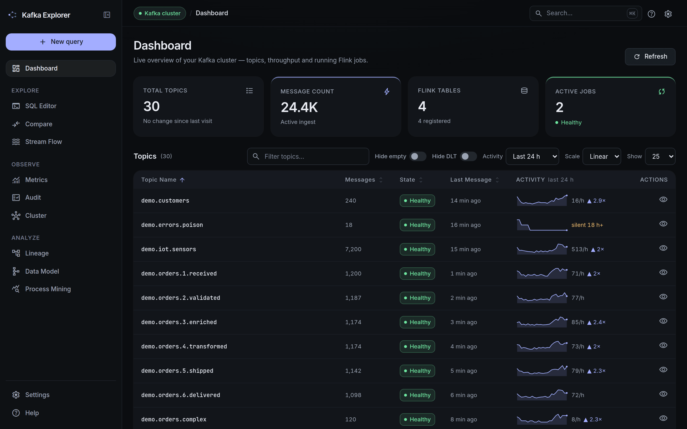
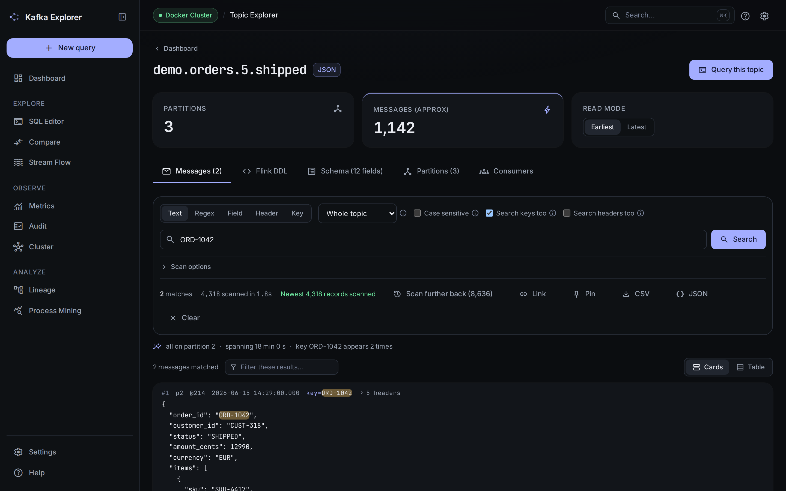
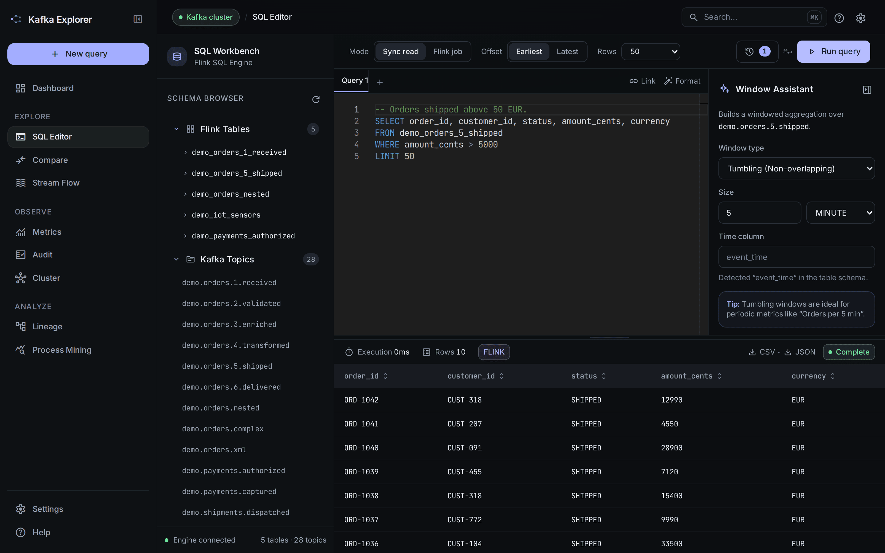
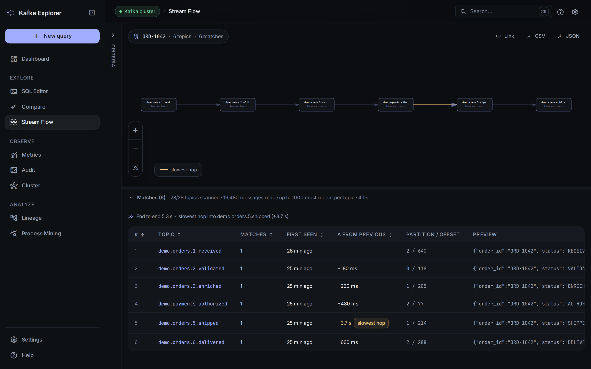
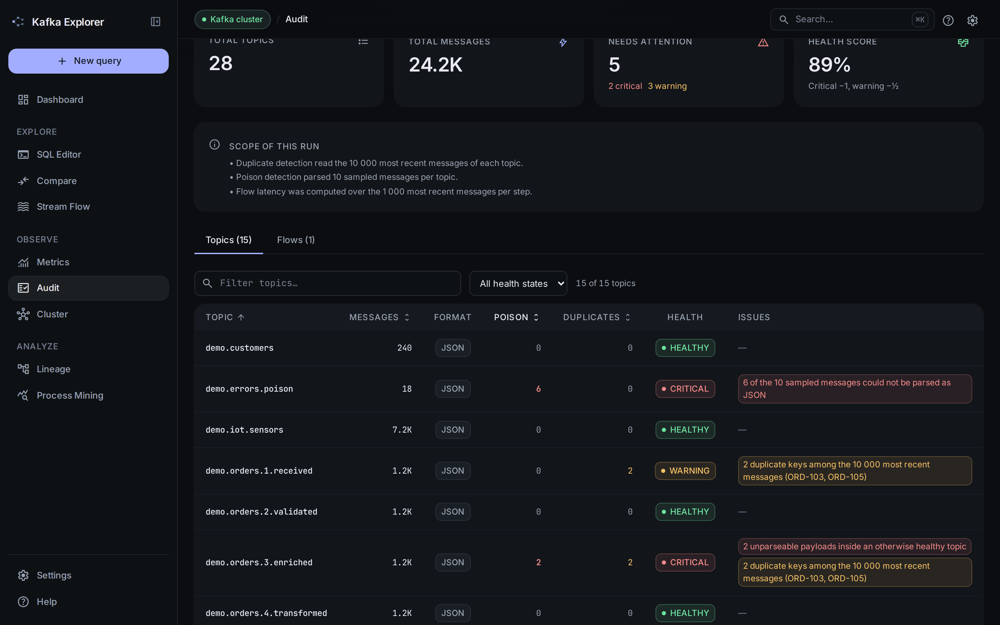

The ultimate companion for Data Engineers. Preview, query, and trace Kafka data instantly. No manual DDL, no complexity—just SQL.
The real interface, over the demo dataset seeded by docker compose up -d.





Stop manual typing of deep JSON paths. Our Query Assistant analyzes your live stream and lets you build complex Flink SQL by simply clicking on message fields.
SELECT.
WHERE clauses instantly.
One integrated platform to handle everything from discovery to deep auditing.
Track data flow from Kafka topics through Flink tables and views in an interactive dependency graph.
VS Code power in your browser. Syntax highlighting, autocomplete, and history.
Trace a specific message ID across your entire architecture chronologically.
Compare topics with shared SQL logic. Highlight data discrepancies and identify missing records instantly.
Detect "poison messages", measure end-to-end latency, and monitor drop-off rates across business processes without writing a single line of code.
Leverage LLMs — OpenRouter out of the box, Claude, a local Ollama, or a fully private SpectraLLM instance — to automatically profile fields, reconstruct business flows, and detect anomalies. Every analysis shows what it cost, and the page states what becomes of the message content: the default is hosted, and pointing it at a loopback address keeps everything on your machine.
Detects IDs, timestamps, and status fields automatically.
Identifies sequence breaks and temporal delays.
# Analysis: Topic "demo.sc.08.logistics.planned"
DETECTED: Correlation ID mapping across 12 topics.
WARNING: Temporal anomaly detected between step 07 and 08. Avg delay: +450ms.
# Flow: Mermaid generated.
Spin up Kafka 4.3 (KRaft, no Zookeeper) via Docker Compose.
docker compose -f docker-compose.yml -f compose/schema-registry.yml up -d
Launch the Spring Boot application locally with a single command.
./mvnw spring-boot:run
Open http://localhost:8080 and start mastering your streams.